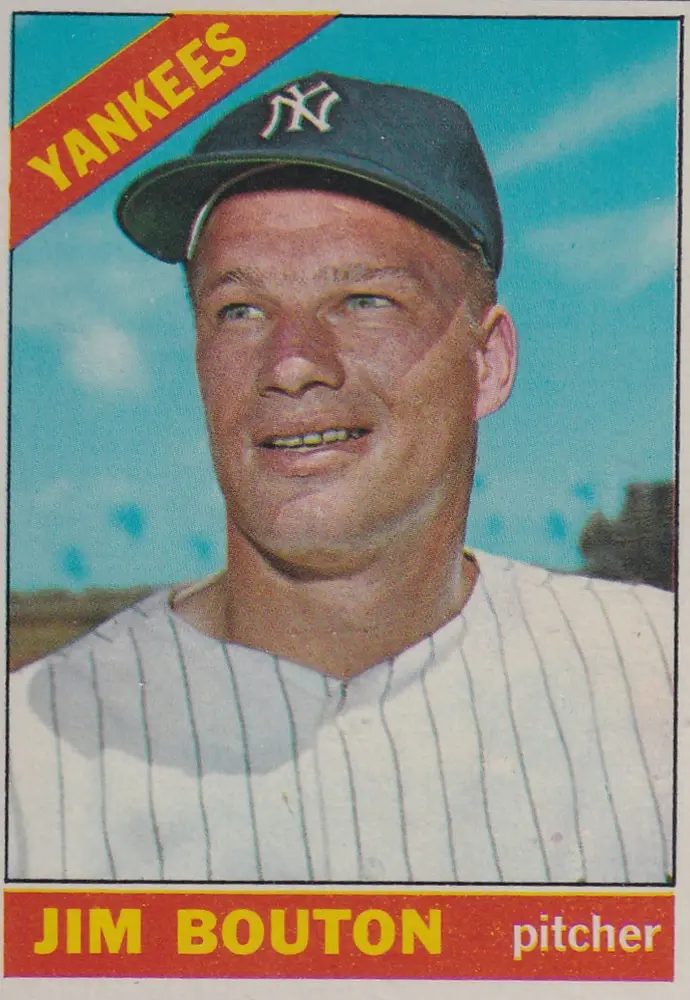

Jim Bouton "Bulldog"
Career Highlights & Facts
(Facts are AI-generated and may require verification)
- Won two games in the 1964 World Series.
- Authored the 1970 baseball book 'Ball Four'.
- Returned to the major leagues in 1978 after a seven-year absence.
Would you like to find out more about Jim Bouton?
Career Totals
| WAR | W | L | ERA | G | GS | SV | IP | SO | WHIP |
|---|---|---|---|---|---|---|---|---|---|
| 7.5 | 62 | 63 | 3.57 | 304 | 144 | 6 | 1238.2 | 720 | 1.264 |
Statistics via Baseball-Reference.com
The Original Clue